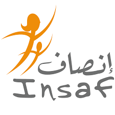
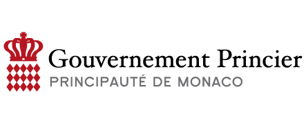
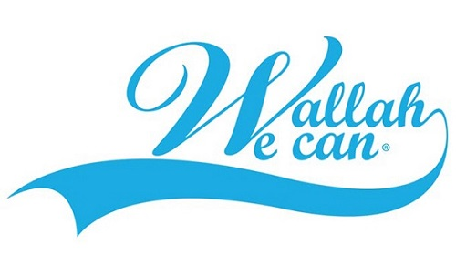

About
HAPPIH est une association qui a émergée à la suite d’une compétition organisé par le gouvernement monégasque. Très généralement, HAPPIH a pour but la réduction des inégalités de genre dans de différentes régions du monde, tel que l’Europe ou le Maghreb. Les plus récents projets de HAPPIH ont été exécuté en France et au Maroc. Ces projets ont essayé de réduire les inégalités de genre à travers la distribution de serviettes hygiéniques réutilisables.
The Team

Rita Sekkat
Co-Créateur et Présidente
Rita est l’un des cinq fondateurs de HAPPIH. Avant son arrivée en France, Rita a grandi et fait ses études au Maroc. Elle poursuit un master d’Affaire Publiques à Sciences Po et un certificat d’étude du genre entre Harvard et Sciences Po. Elle est dédiée à la lutte contre les inégalités de genre. Elle espère réduire les inégalités du genre et de casser le tabou associe à la menstruation. Rita est une grande enthousiaste et joueuse de foot. Elle espère casser les stéréotypes du genre non seulement avec le foot mais aussi à travers les actions de HAPPIH.
Charles Culioli
Co-Créateur et Vice-Président
Charles Culioli est un étudiant de droit à Sciences Po Paris. Il détient une licence d’histoire et d’études judiciaires de l’Université de Californie à Berkeley et une licence en sciences politiques de Sciences Po Paris. Il est passionné par les questions de justices sociales, développement et éthique dans la politique. Charles adore le foot et est passionné par le squash!
Denizalp Goktas
Co-Créateur et Vice-Président
Denizalp est doctorant dans le département d’informatique de l’université de Brown. Sa recherche se concentre sur la théorie des jeux algorithmique, l’économie informatique et l’intelligence artificielle. Il a auparavant travaillé en tant qu’assistant de recherche sous la direction du Professeur Seth Goldstein, et en tant qu’analyste a Der Norske Bank et Hikma Pharmaceutical. Denizalp est titulaire d’une licence en économie de Sciences Po et d’une licence d’informatique et de statistique de l’Université de Columbia.
Walid Ben Hamadi
Co-Createur et Vice-Président
Walid Ben Hamadi est en train de poursuivre ses études en gestion et affaire publiques à Sciences Po et HEC Paris. Il est titulaire d’une licence en sciences sociales de Sciences Po. Il est particulièrement intéressé par le rôle de l’éducation, de l’autonomisation des jeunes et de l’opinion publique dans la réduction des inégalités et du développement économique. Walid est passionné par les voitures et adore le go-kart!
Our Supporters
INSAF (L’Institut national de solidarité avec les femmes en détresse)

L’Institut national de solidarité avec les femmes en détresse contribue à l’avènement d’une société marocaine qui garantit à chaque femme et à chaque enfant le respect de leurs droits dans un environnement digne et responsable.
Direction de la Coopération Internationale (DCI) du Gouvernement princier de Monaco

L’aide publique au développement du Gouvernement Princpier de Monaco, mise en œuvre par la Direction de la Coopération Internationale, permet de soutenir chaque année plus de 130 projets dans 11 pays partenaires, principalement des PMA (Pays les Moins Avancés).
Wallah We Can

Wallah We Can est une fondation Tunisienne à but non lucratif, œuvrant pour l’enfance et l’éducation en Tunisie. La fondation nous a permis de bénéficier de son expertise pour créer notre modèle de serviette écologique et réutilisable.